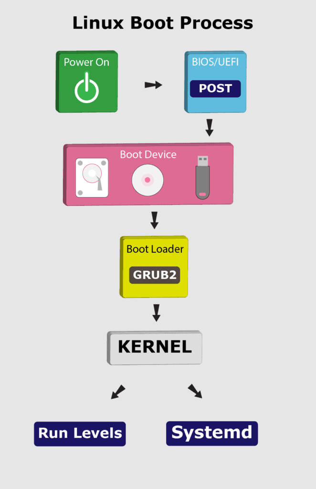
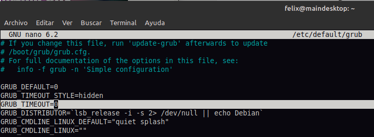
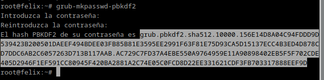
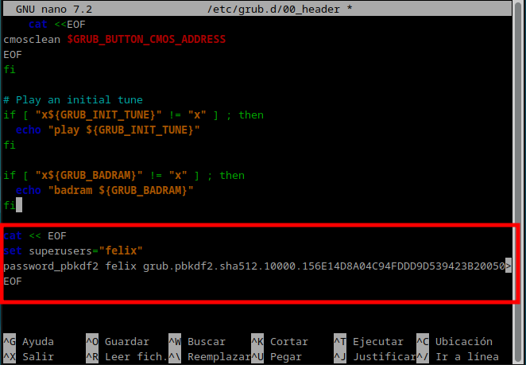
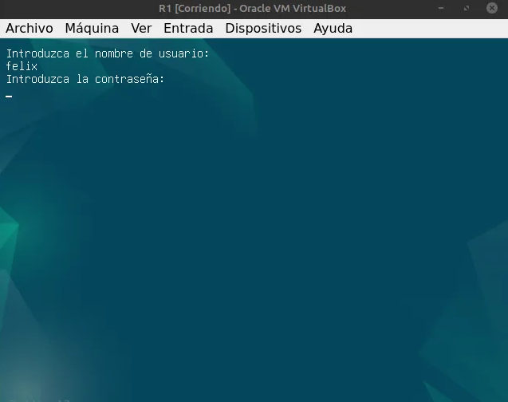

El proceso de arranque de un sistema operativo Linux, como se ilustra en el diagrama, es una secuencia ordenada de eventos que inicia con el encendido del equipo y culmina con la carga completa del sistema operativo
GRUB2 tiene un papel importante en este proceso, ya que actúa como una puerta de entrada al sistema operativo. Al controlar qué kernel se carga y con qué parámetros, comprometer GRUB2 significaría llegar a tener control total del sistema. Un atacante que logre comprometer GRUB2 puede modificar el proceso de inicio, instalar software malicioso, ejecutar codigo con privilegios de administrador o acceder a los datos de los discos duros.
Para esta práctica se utilizará una máquina virtual en VirtualBox con Debian 12.
Para esto se ha editado el archivo /etc/default/grub
GRUB_TIMEOUT_STYLE=menu a GRUB_TIMEOUT_STYLE=hidden y
GRUB_TIMEOUT=5 a GRUB_TIMEOUT=0

Para aplicar los cambios:
$ sudo update-grub
Tras estos cambios, al reiniciar no debería aparecer el menú del GRUB sino que directamente cargaría el sistema operativo.
fuente: https://linuxconfig.org/set-boot-password-with-grub
El primer paso es generar un hash de la contraseña utilizando un comando específico. Esto evita que la contraseña sea visible si alguien llegara a acceder al archivo de configuración de GRUB.

Para introducirla, se abre el siguiente archivo de configuración de GRUB:
$ sudo nano /etc/grub.d/00_header
Y se añaden las siguientes lineas al final, cambiar los campos USUARIO por el nombre de usuario que se desee e INSERT-HASH por el creado en el paso anterior.
cat << EOF
set superusers="USUARIO"
password_pbkdf2 USUARIO INSERT-HASH
EOF
para guardar cambios en el editor nano, pulsar "Control" + "o" y salir con "Control" + "x"

Para aplicar los cambios se tiene que ejecutar un update-grub y probarse reiniciando el equipo
$ sudo update-grub
$ sudo reboot
Resultado:

fuente: https://wiki.archlinux.org/title/GRUB/Tips_and_tricks
Para esta practica los he copiado simplemente con el comando cp
Los archivos de configuración del GRUB se pueden copiar con los siguientes comandos (editar los PATH a los convenientes) :
sudo cp /etc/default/grub /path/to/backup/
sudo cp -r /etc/grub.d /path/to/backup/
sudo cp /boot/grub/grub.cfg /path/to/backup/
sudo cp /boot/grub/custom.cfg /path/to/backup
Para restaurar la configuración se tendría que copiar los archivos desde donde se hayan guardado y sustituir los que tenga el GRUB actualmente:
sudo cp /path/to/backup/ /etc/default/grub
sudo cp -r /path/to/backup/ /etc/grub.d
sudo cp /path/to/backup/ /boot/grub/grub.cfg
sudo cp /path/to/backup /boot/grub/custom.cfg
Por último aplicar los cambios actualizando el GRUB con:
$ sudo update-grub
fuente: https://soloconlinux.org.es/securizando-grub/
Otras medidas de seguridad para proteger el arranque pueden incluir encriptar las particiones del disco y modificar los parámetros del kernel. A continuación se explica de manera básica ambos procesos.
Es necesario tener instalado cryptsetup. Se puede instalar con el siguiente comando en sistemas Debian/Ubuntu:
sudo apt install cryptsetup
Se requiere una partición vacía para la encriptación. Por ejemplo, se asume que la partición a encriptar es /dev/sdb2.
Para encriptar la partición, se ejecuta el siguiente comando:
sudo cryptsetup luksFormat /dev/sdb2
Se debe introducir una contraseña para proteger la partición.
Para acceder a la partición encriptada, se utiliza el siguiente comando:
sudo cryptsetup luksOpen /dev/sdb2 nombreParticion
Después de abrir la partición, es necesario formatearla con un sistema de archivos. Para formatearla como ext4:
sudo mkfs.ext4 /dev/mapper/nombreParticion
Se crea un punto de montaje y se monta la partición:
mkdir /mnt/particionsecreta
sudo mount /dev/mapper/nombreParticion /mnt/particionsecreta
El estado de la partición encriptada se puede verificar con el siguiente comando:
sudo cryptsetup -v status nombreParticion
Para desmontar y cerrar el volumen:
sudo umount /mnt/particionsecreta
sudo cryptsetup luksClose nombreParticion
Para montar la partición automáticamente al inicio, es necesario editar los archivos /etc/crypttab y /etc/fstab.
sudo nano /etc/crypttab
Se agrega la siguiente línea:
nombreParticion /dev/sdb2 none luks
sudo nano /etc/fstab
Se agrega la siguiente línea:
/dev/mapper/nombreParticion /mnt/particionsecreta ext4 defaults 0 2
Con esta configuración, se solicitará la contraseña para desbloquear la partición en cada inicio del sistema.
Estas se pueden activar desde los parámetros de GRUB en el siguiente fichero /etc/default/grub
GRUB_CMDLINE_LINUX_DEFAULT="quiet splash kaslr"
Estas son algunas de las opciones que pueden mejorar las seguridad del sistema en el aranque:
security-misc.Para aplicar los cambios:
$ sudo update-grub
En el enlace de la fuente se pueden encontrar más opciones con las que para customizar el kernel o descargarnos. https://www.kicksecure.com/wiki/Hardened-kernel
También podemos descargarnos la configuración del proyecto hardened-kernel
El hardening en Linux es un proceso continuo que requiere atención y adaptación a medida que surgen nuevas amenazas. Implementar las mejores prácticas descritas no solo ayuda a proteger el sistema contra ataques, sino que también contribuye al cumplimiento de normativas y estándares de seguridad. Al adoptar un enfoque proactivo hacia la seguridad, los administradores pueden garantizar que sus sistemas Linux operen en un entorno seguro y resiliente.